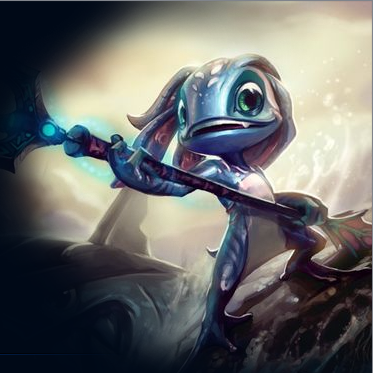

피즈가 목표를 향해 돌진하며 기본 공격 피해에 10/25/40/55/70 (+0.55AP) 의 마법 피해를 추가로 가합니다. 이 스킬은 명중 시 발생 효과가 적용됩니다. (사정거리: 550)
기본 지속 효과: 피즈의 공격이 적들을 상처 내서 3초간 20/30/40/50/60 (+0.4AP)+ 대상이 잃은 체력의 4/4.5/5/5.5/6%의 마법 피해를 줍니다.
(미니언 상대로는 최대 300)
사용 시: 다음 공격이 50/70/90/110/130 (+0.5AP)의 마법 피해를 줍니다.
대상을 처치하지 못한 경우 5초 동안 적중시 10/15/20/25/30 (+0.35AP)의 추가 공격력 강화 효과를 얻습니다.
심해석 삼지창 활성화 효과로 유닛을 처치하면 마나 20/28/36/44/52을 돌려받고, 재사용 대기시간이 1초가 됩니다.